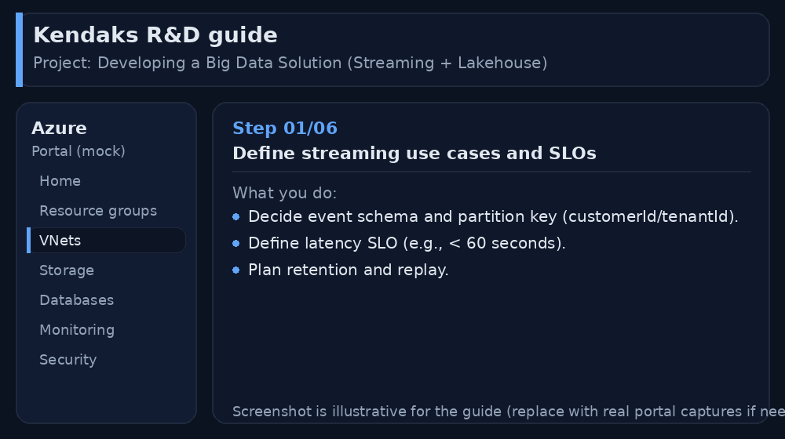
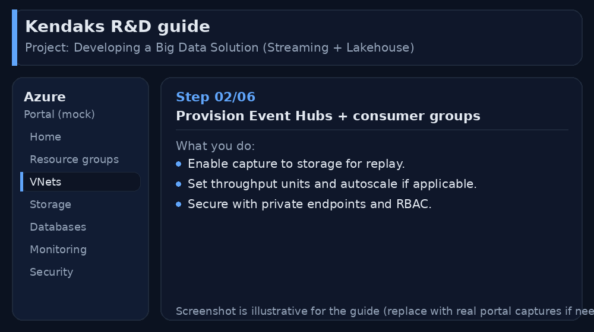
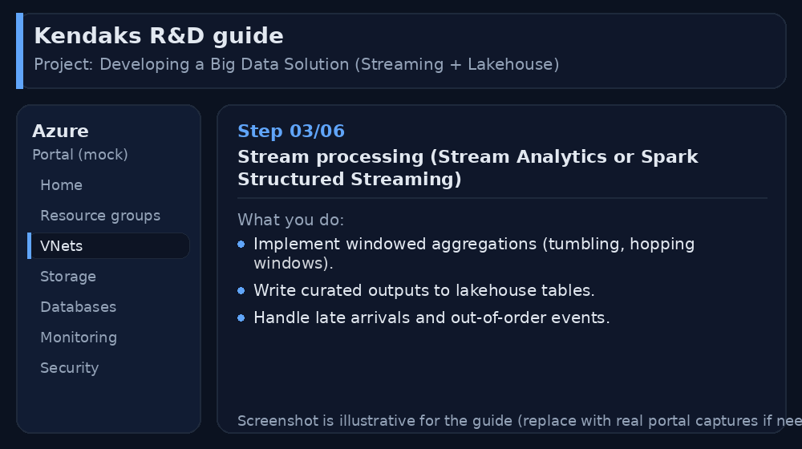
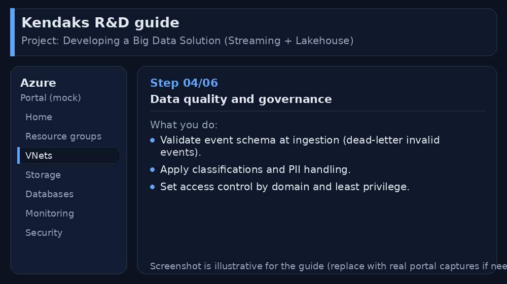
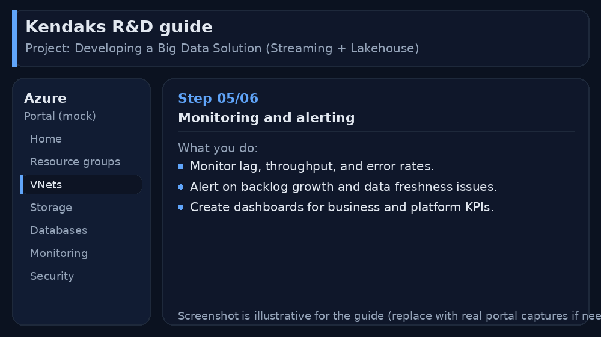
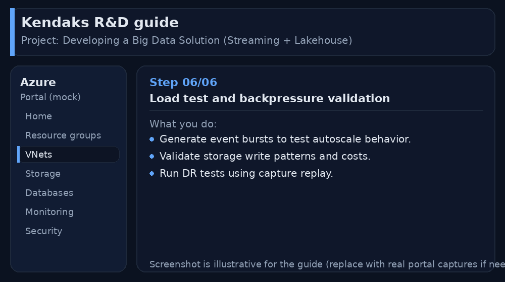

Developing a Big Data Solution (Streaming + Lakehouse)
Category: Data & Analytics
Scenario: Operations needs near-real-time KPI dashboards (queue length, SLA breaches). Example: 'Kendaks Contact Center' streams call events and agent status into a lakehouse.
Architecture diagram
High-level view of the main components and data/control flows.
Low-level architecture diagram (Visio-style)
Implementation view (networking, security, ops). Click to open full size.
Low-level architecture details
(No low-level text provided.)
Step-by-step implementation
Step 1/6

Define streaming use cases and SLOs

Reference portal screenshot (click to zoom). Replace with your tenant capture if needed.
- Decide event schema and partition key (customerId/tenantId).
- Define latency SLO (e.g., < 60 seconds).
- Plan retention and replay.
Validation checklist
- Stakeholders have signed off the scope, SLAs, and data/security requirements.
- You have documented naming standards, environments, and ownership (RACI).
Step 2/6

Provision Event Hubs + consumer groups

Reference portal screenshot (click to zoom). Replace with your tenant capture if needed.
- Enable capture to storage for replay.
- Set throughput units and autoscale if applicable.
- Secure with private endpoints and RBAC.
Validation checklist
- Connections/authentication succeed and test messages/records flow through.
- Retries/DLQ/error handling are configured and validated with a forced failure.
Step 3/6

Stream processing (Stream Analytics or Spark Structured Streaming)

Reference portal screenshot (click to zoom). Replace with your tenant capture if needed.
- Implement windowed aggregations (tumbling, hopping windows).
- Write curated outputs to lakehouse tables.
- Handle late arrivals and out-of-order events.
Validation checklist
- The storage/lakehouse/warehouse resources are created and accessible via least privilege.
- A sample dataset lands successfully and can be queried/read end-to-end.
- Retention, encryption, and backup settings match requirements.
Step 4/6

Data quality and governance

Reference portal screenshot (click to zoom). Replace with your tenant capture if needed.
- Validate event schema at ingestion (dead-letter invalid events).
- Apply classifications and PII handling.
- Set access control by domain and least privilege.
Validation checklist
- RBAC/roles are assigned to Entra groups (no direct user assignments).
- Policies/labels/lineage settings are enabled as required.
- Audit logs are enabled and flowing to the central workspace/SIEM.
Step 5/6

Monitoring and alerting

Reference portal screenshot (click to zoom). Replace with your tenant capture if needed.
- Monitor lag, throughput, and error rates.
- Alert on backlog growth and data freshness issues.
- Create dashboards for business and platform KPIs.
Validation checklist
- Logs and metrics are flowing (check Log Analytics / Monitor).
- Alerts trigger correctly (test alert path to email/Teams/ITSM).
Step 6/6

Load test and backpressure validation

Reference portal screenshot (click to zoom). Replace with your tenant capture if needed.
- Generate event bursts to test autoscale behavior.
- Validate storage write patterns and costs.
- Run DR tests using capture replay.
Validation checklist
- UAT completed with representative users and scenarios.
- Performance meets baseline; issues tracked and remediated.